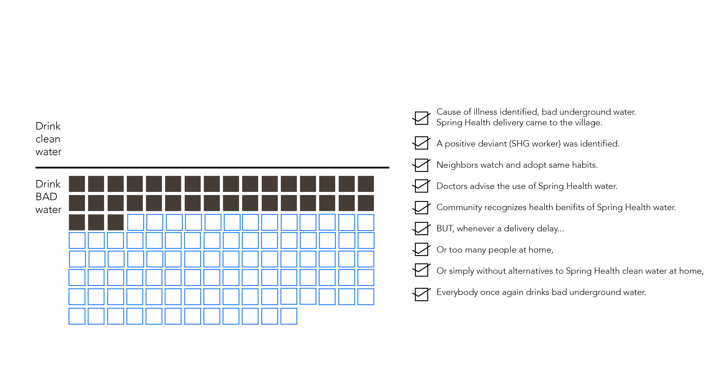
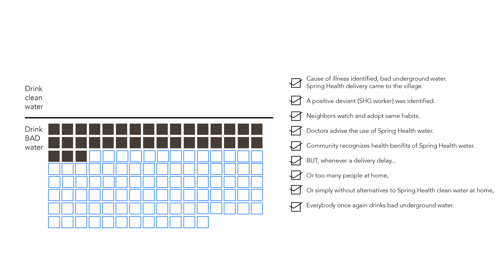

Style Sheets + Choosing an Interactive
Visual Guide
I have 3 visualiations that I want to create
Bullet Graph
With this visualization, I will be able to pack in more context about the story I want to tell. With a dataset of 78 people, I will break down how many of these families have kids, how much water do these familes buy, and how many of these families run out of water by the end of the day.
Tools I will use- amcharts using jsfiddle
Network Diagram
I want to show communication between these 78 families. I have data about what influences each of these families to buy clean water. All these relationships can be highlighted using a network diagram.
Tools I will use- Non ribbon chord diagram
Area Graph
Here I will show the number of people who bought clean water over the course of a year. I know that the data shows that the number gradually increases over the year. Maybe I can convert this into a stacked area graph to compare buying patterns in 2 different villages.
Tools I will use- this website makes it easy to create area graph visuals.
Alternative Option
Here is what I worked on last week, but now I am choosing to not pursue this visualization. I tried to copy code from this scroller section website. , but was unsuccessful in my attempts.
However if possible, this is the story I originally intended to show, something like this one.

 
